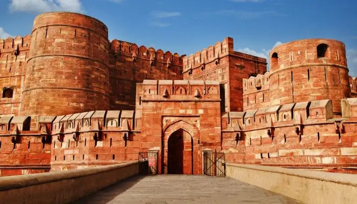

The Taj Mahal is one of the seven wonders of the world and is considered to be the most popular tourist attraction in the country.
A symbol of love, the Taj was built by Mughal Emperor Shah Jahan for his queen Mumtaz.
Tagore described the Taj as a "teardrop on the cheek of eternity". The monument attracts a lot of tourists all around the year.
HAWA MAHAL,JAIPUR
The Victoria Memorial is a large marble building, which is considered to be the pride of Kolkata.
Built between 1906 and 1921, it is dedicated to the memory of Queen Victoria.
Now, it is a museum and a popular tourist spot under the Ministry of Culture.
VICTORIA MEMORIAL,KOLKATA
The Victoria Memorial is a large marble building, which is considered to be the pride of Kolkata.
Built between 1906 and 1921, it is dedicated to the memory of Queen Victoria.
Now, it is a museum and a popular tourist spot under the Ministry of Culture.

Agra Fort,Uttar Pradesh
To get a sense of the rich history of the Mughal era, visit the walled palatial Agra Fort, one of the famous historical places in India that is built entirely of red sandstone.
Built in 1565 by Akbar, this historical tourist place in India has two ornately designed gates: the Amar Singh Gate and the Delhi Gate.
You can only enter through the Amar Singh Gate to uncover an ancient city filled with gateways, courts, passages, palaces and mosques.
It is one of the most beautiful places to visit in Agra.
Fatehpuri Sikri,Uttar Pradesh
The royal city of Fatehpur Sikri was once the capital of the Mughal era during Akbar’s reign.
This royal city is one of the historical tourist places in India and once had palaces, public buildings, mosques, quarters for the king, the army as well as the servants.
Further, the well planned royal city with carved columns and decorated pillars was built between 1571-1573 AD and abandoned due to a shortage of water.
Mahabodhi Temple,Bodh Gaya
Visit the Mahabodhi temples that are one of the four holy grounds of Buddhism.
This is the spot where the Buddha is said to have attained enlightenment while meditating under a fig tree.
The Bodhi tree is the descendant of the Fig tree and lies just near the temple.
The earliest temple was built by Ashoka in the 3rd century BC.
The temple has a massive statue of Buddha touching the earth with this right hand.
Qutub Minar, Delhi
The Qutub Minar, another UNESCO World Heritage Site, is an incredible example of Indo-Muslim architecture that touches the skies at an incredible height of 240ft.
It is named after Qutub-ud-din Aibak, the first Muslim ruler of North India.
The place where Qutub Minar stands is usually regarded as the site of the first Muslim kingdom in northern India.
Elephanta Caves, Mumbai
A UNESCO World Heritage Site, Elephanta Caves is a specimen of rock-cut art and architecture from the times of medieval India.
It is an island and is located at a distance of 11km from the city of Mumbai.
It also provides an amazing view of the Mumbai skyline.
Gwalior Fort, Gwalior
Perched high at the top of a vast rocky massif, Gwalior Fort is a place hard to miss being visible from every nook and corner of the city.
Regarded as one of most impregnable fortress of north and central India, the place is a must-visit.
Mysore Palace, Mysore
The former residence of the royal family of Mysore, the Mysore Palace is an extremely breath-taking example of the Indo-Saracenic style of architecture.
It was built in the year 1912 for the 24th Ruler of the Wodeyar Dynasty and is till date one of the biggest palaces in the country.
It's one of the most popular and well-known tourist attractions in India.
Victoria Terminus, Mumbai
Also known as Chhatrapati Shivaji Maharaj Terminus, the Victoria Terminus is the main railway station serving Mumbai.
Constructed in the Victorian-Gothic style of architecture, the railway station is a declared as a World Heritage Site by the UNESCO.
The station is one of the most famous historic landmark symbolizing the pre-independence British Raj in India.
Mehrangarh Fort, Jodhpur
Located in Jodhpur, Mehrangarh Fort is one of the largest forts in the country.
It is located at the top of a 410 feet elevated hill and guarded by huge walls.
The fort encloses a museum now which exhibits various belongings of the royals.
The palace was built by Rao Jodha in 1459.
Gol Gumbaz, Bijapur
Gol Gumbaz, also known as Gola Gummata in literal sense means a circular dome.
It is the mausoleum of Mohammed Adil Shah, Sultan of Bijapur.
The tom is located in Bijapur, Karnataka and was built by architect Yaqut in 1656.
It is considered as the structural triumph of Deccan architecture.
Humayun's Tomb, Delhi
Apart from being known for its stunning architecture, this is the first garden-tomb on the Indian subcontinent.
It is a UNESCO World Heritage Site declared in 1993, and has undergone widespread restoration work since then.
The tomb was custom-built by Humayun's son Akbar during 1569-70, and is also the first structure to have made the use of red sandstone at a massive scale.
khajurao Madhya Pradesh
Khajuraho is known around the world for its stunning temples adorned by erotic and sensuous carvings.
Khajuraho is a brilliant example of Indian architecture and its culture back in the medieval period.
The architecture of these Hindu and Jain temples depict the innocent form of love, the carvings on the walls display passion in the most erotic yet aesthetic ways.
Shore Temple, Mahabalipuram
The Shore Temple lies in front of the Bay of Bengal, hence it is known by the name mentioned.
Dating back to the 8th century AD, the structured temple is made out of granite chunks.
The temple was constructed in such a way that it would overlook the Bay of Bengal at a Southern Chennai village called Mahabalipuram.
The village was a busy port during the reign of Narasimhavarman II of the Pallava dynasty.
Amber Fort, Jaipur
Amber Fort, situated 11 kms from Jaipur, is a fort built with great artistic taste.
Cradled on the top of a hill forming a beautiful reflection in Maotha Lake, it is popularly known as Amer Fort.
The Great Living Chola Temples, Tamil Nadu
The Chola Empire gifted a major chunk of history to us to devour on by building some of the most magnificent temples of all times. These temples were constructed between 11th- and 12th-century.
The three temples built by the Chola kingdom are a part of the UNESCO World Heritage Site and are labelled as, "Great Living Chola Temples".
These are - The Brihadesvara Temple (Thanjavur), Brihadisvara Temple (Gangaikondacholisvaram) and Airavatesvara Temple (Darasuram).